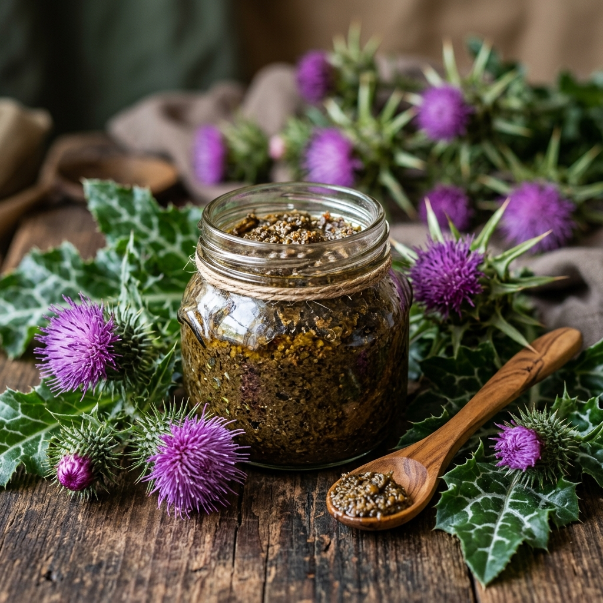

Die Mariendistel: Wächterin der Lebergesundheit
Die Leber ist das zentrale Entgiftungsorgan unseres Körpers und verrichtet täglich biochemische Schwerstarbeit. In der traditionellen Naturheilkunde gilt die Mariendistel (Silybum marianum) als die unangefochtene Königin der Leberpflanzen. Ihre dornigen Blätter und purpurroten Blüten verbergen in ihren Samen ein außergewöhnliches Wirkstoffprofil, das seit der Antike zur Regeneration und zum Schutz des Lebergewebes eingesetzt wird.
Wie der Silymarin-Komplex die Zellen schützt
Das Herzstück der Mariendistel ist der Silymarin-Komplex. Diese Gruppe bioaktiver Flavonoide hat die einzigartige Fähigkeit, die äußere Membran der Leberzellen zu stabilisieren, sodass Zellgifte gar nicht erst in das Innere eindringen können. Darüber hinaus stimuliert Silymarin die RNA-Polymerase I in den Zellkernen, was die Proteinsynthese anregt und somit die Neubildung (Regeneration) von gesundem Lebergewebe massiv beschleunigt.
Unterstützung bei der natürlichen Entgiftung
Unsere moderne Lebensweise, geprägt von verarbeiteten Lebensmitteln, Umweltgiften und Stress, belastet die Leber oft über das natürliche Maß hinaus. Die Mariendistel Paste von Anadoa Naturhaus fängt als starkes Antioxidans freie Radikale ab und erhöht den Glutathion-Spiegel in der Leber – dem wichtigsten körpereigenen Entgiftungsenzym. Sie ist der ideale Begleiter während einer Frühjahrskur, nach Medikamenteneinnahme oder als tägliches Detox-Ritual.
Förderung von Galle und Verdauungssubstanzen
Neben dem direkten Leberschutz regt die Mariendistel durch ihre natürlichen Bitterstoffe auch die Produktion und den Fluss der Gallenflüssigkeit an. Dies ist essenziell für eine gesunde Fettverdauung und verhindert das Gefühl von Völlegefühl oder Blähungen nach üppigen Mahlzeiten. Die synergistische Einbettung der Samenextrakte in unsere Paste sorgt für eine maximale Bioverfügbarkeit dieser wertvollen Bitterstoffe im gesamten Verdauungstrakt.
Tägliche Anwendung der Mariendistel Paste
Um das volle Potenzial der Mariendistel auszuschöpfen, empfehlen wir die Einnahme von 1-2 Teelöffeln der Paste täglich, am besten kurz vor oder nach einer Hauptmahlzeit. Die Paste kann pur genossen werden, eignet sich aber auch hervorragend als feinherbe Ergänzung im morgendlichen Müsli oder Smoothie. Eine kurmäßige Anwendung über 4 bis 6 Wochen wird besonders in Phasen erhöhter Belastung empfohlen.
Häufig gestellte Fragen (FAQ)
Ist das
Produkt frei von künstlichen Konservierungsstoffen?
Absolut. Im Anadoa Naturhaus verwenden wir ausschließlich natürliche Zutaten. Die Haltbarkeit wird durch die konservierenden Eigenschaften von Rohhonig, Melasse oder kaltgepresstem Öl auf natürliche Weise gewährleistet.
Wie lange
ist die Paste nach dem Öffnen haltbar?
Aufgrund der natürlichen konservierenden Eigenschaften von Honig und Melasse ist die Paste nach dem Öffnen in der Regel mehrere Monate haltbar, sofern sie kühl und dunkel gelagert wird.
Muss die
Paste im Kühlschrank aufbewahrt werden?
Nein, eine Aufbewahrung bei Zimmertemperatur an einem lichtgeschützten, trockenen Ort ist ideal. Im Kühlschrank kann die Paste zu hart werden.
Wann ist der
beste Zeitpunkt für die Einnahme?
Die meisten unserer traditionellen Pasten entfalten ihre beste Wirkung, wenn sie morgens auf nüchternen Magen oder etwa 30 Minuten vor einer Mahlzeit eingenommen werden.
Eignet sich
die Paste auch für Kinder?
Das hängt von der jeweiligen Paste ab. Unsere spezielle 'Tannenzapfen Paste für Kinder' ist ideal. Andere stark wirksame oder bittere Pasten sind in der Regel für Erwachsene konzipiert.
Anadoa Naturhaus
Natur pur. Höchste Qualität direkt aus Anatolien.